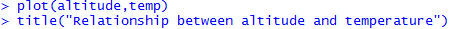
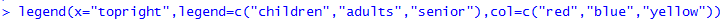
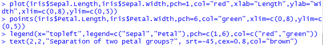
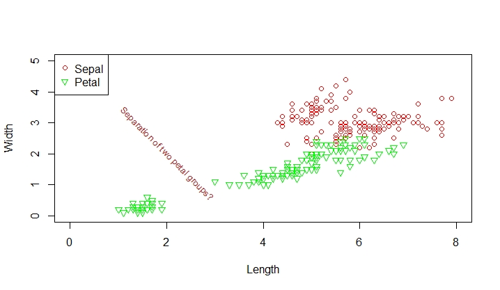

Add title, legend, and text to a plot
Introduction
We can add titles, axes, labels of axes, text of points, and legend to a plot.
Knowledge
To add title, we can either use the argument main= in the plot () function as shown in the previous example, or use the function title(). For example, using the altitude and temperature data from previous example, if we do not have the argument main= in the plot function, we can add title() after the plot () function

To add a legend to a plot, use the R function legend(x=, legend=, pch=, col=, border =, horiz=) after plot(). In the arguments:
x: character or number to show the position where the legend should appear
legend: a character expression vector to appear as the legend
pch: point types appearing in the legend
col: the color of points or lines appearing in the legend
border: the border color for the box of the legend
horiz: logical; if TRUE (default), set the legend horizontally; otherwise, vertically.
An example R code is

This is to add the legend at the top right corner with the three colors representing three age groups.
To add text to a particular point or place in the plot, use the R function
text(x, y, labels=“ “, adj= ,srt = , font= , cex = , col = ) after the plot () function.
In the arguments,
x and y: the coordinates where the text labels should be written.
labels: the character vector that specifies the text to appear
adj: values of 0.5, 0 or 1, where 0.5 (default) is centered, 0 is left-justified, and 1 is right-justified
srt: the angle that the text appears
font: font of the text
cex: size of the text
col: color of the text
Practice and Reflection
Practice
Example 4: Use the R data iris to generate a scatter plot showing the relationship between sepal length and sepal width in red color, and the relationship between petal length and petal width in green color. Plot the sepal using red circles (pch=1) and plot the petal using green triangles (pch=6). Add a legend to show the difference between the petal and sepal. Add text “separation of two petal groups?” at the position (2,2) with -45∘, in brown color with size of 0.8.
The R code is:

The output graph is shown in figure 6

Figure 6. Add legend, and text to a scatter plot.
Reflection
Activity 4: The data below shows the rain fall amount in a city at two different years. Generate two line plots in one graph to show the trend of rain fall through time in the two years. Label the x-axis as month, and y-axis as rain fall amount. Make the line for year 2000 red and green for year 2010. Use the type of line across points for both years (type=”o”). Make the y-axis start from 0 and end at 40 with an increment of 5. Add legend to the top right corner of the graph showing the two different years with different color (red for 2000 and green for 2010), with size “cex=0.8”. Add text “maximum point” at the maximum point with black color and size “cex=1”.
| March | April | May | June | July | August | Sep | October | |
|---|---|---|---|---|---|---|---|---|
| Year2000 | 7 | 12 | 28 | 30 | 41 | 39 | 22 | 7 |
| Year2010 | 10 | 9 | 19 | 28 | 32 | 27 | 18 | 3 |
Assessment
Use the R dataset Orange to generate five boxplots in one graph. Each boxplot shows the five number summary of the circumference of each tree. The factor Tree is ordered as 3<1<5<2<4, which is not the original order. Rename the factor Tree in ascending order. Add a legend showing “Tree1”, “Tree2”, “Tree3”, “Tree4”, and “Tree5” on the top left corner of the graph, with red being tree1, green being tree2, blue being tree3, yellow being tree4, and gold being tree5. Make the size of the legends 0.8, and use solid dots. Give the graph a title “Orange Tree Circumferences”.